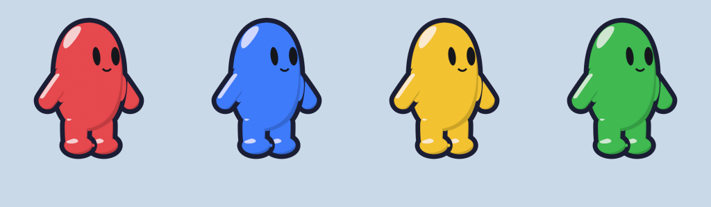
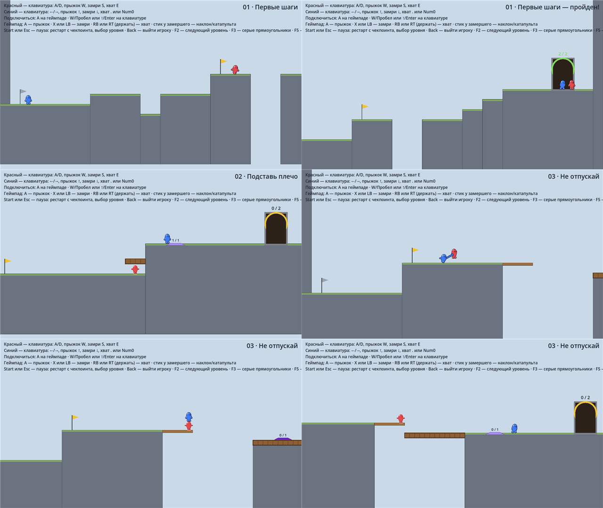
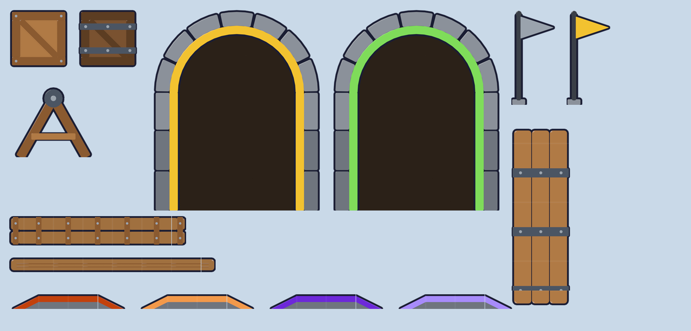
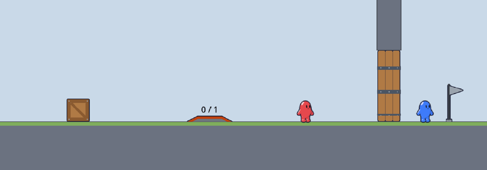
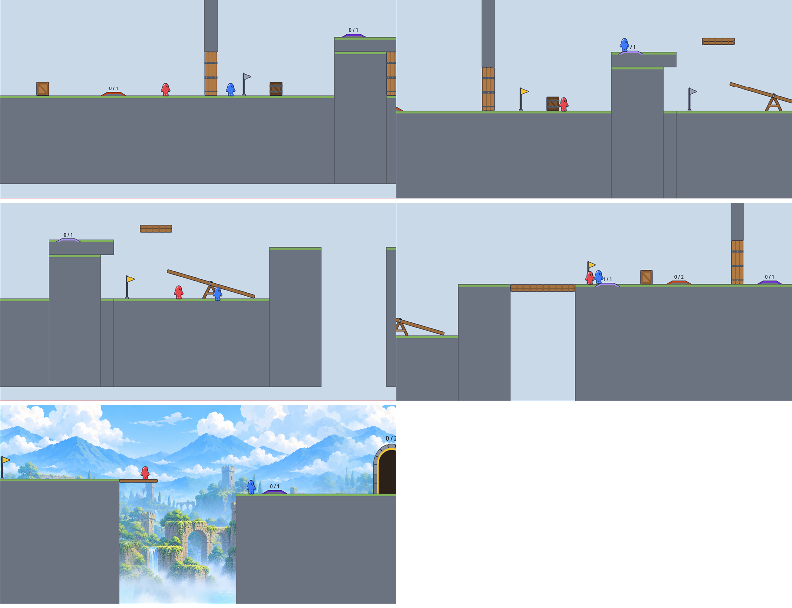
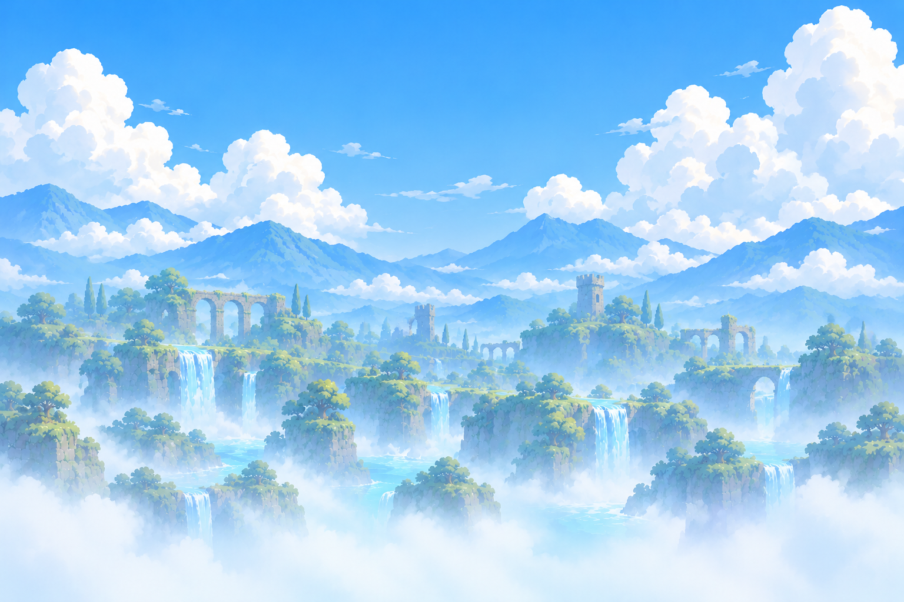
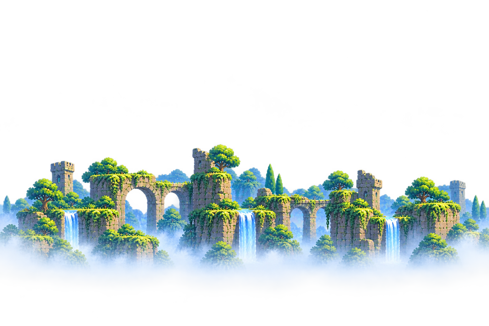
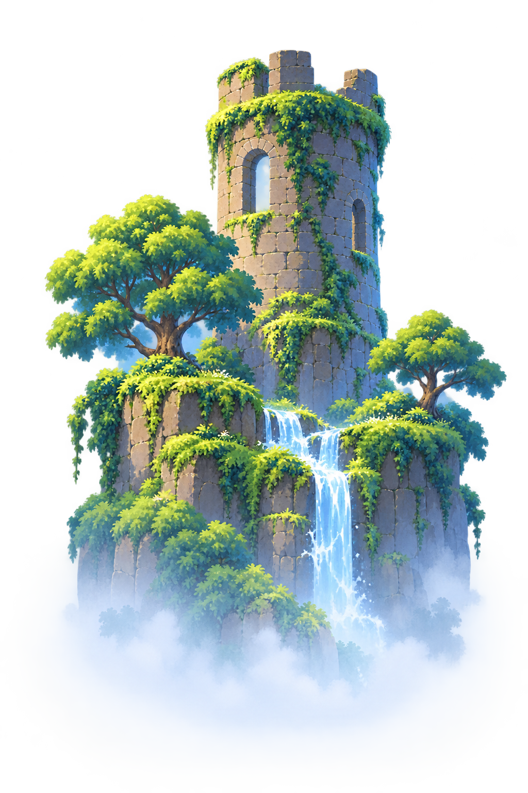
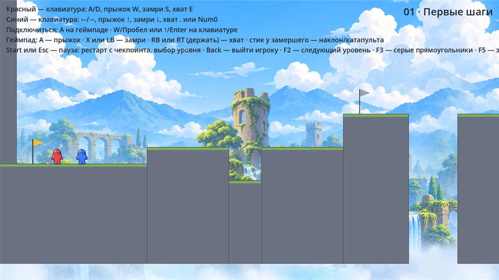
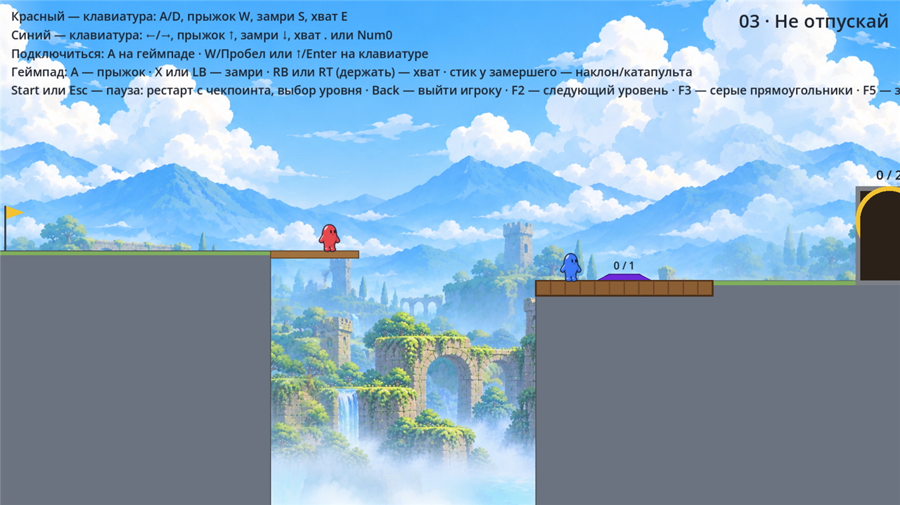

Персонаж
Модель, заливка и анимации собраны скриптом в Blender (tools/blender/character.py) по концепт-листу: мармеладный «боб», короткие ручки и ножки, глаза-овалы, глянцевый блик и толстый тёмный контур. Четыре цвета — по одному на игрока. Ниже — настоящие кадры из листов спрайтов, которые использует игра.
Состояние
Цвет
Размер
«В игре» — размер на экране при обычной камере: персонаж 56 пикселей в высоту (хитбокс 44 × 56). Руку хвата игра рисует сама: она тянется к товарищу под любым углом, поэтому её нет в кадрах — смотрите снимок ниже.


Механизмы
Ящики, мосты, двери, плиты, финиш, флажки и качели сделаны тем же скриптовым способом в Blender (tools/blender/props.py) и в том же стиле, что персонаж: всё, с чем можно взаимодействовать, обведено тёмным контуром, а нарисованное без контура — декорация. Плита оранжевая, защёлка фиолетовая, нажатые светлее. Мосты, балки, двери и плиты собираются игрой любой длины из бесшовного куска и торцов.



Этапы разработки
Сначала механика на серых прямоугольниках, потом уровни, потом графика. Подробно — в docs/05.
Мир 1 — «Забытые мосты»
20 уровней с нарастающей сложностью: руины, водопады и подвесные мосты. Каждый новый уровень вводит одну мысль и сначала проверяется вдвоём. Превью собранных уровней — снимки серых версий целиком.
Задники
Задник собирается в игре из слоёв с параллаксом: дальний план, средний план с прозрачностью и одиночные ориентиры. Дальний и средний слои бесшовные и повторяются на любую длину уровня. Первая партия v2 — долина водопадов для уровней 01–05 и башня для уровня 01 — уже стоит в игре.





Платформы и механизмы пока серые — их модули из камня и дерева следующие.
Набор v1 (одна картинка на уровень, старая нумерация) — галерея v1. Задание и промпты v2 — docs/08.
Запуск и управление
Готовая сборка: build/windows/Glue.exe — один файл, Godot не нужен. Пересобрать: build_exe.bat.
Из проекта: положить Godot 4.7 в tools/godot/ и запустить run_prototype.bat.
Каждый игрок нажимает A на своём геймпаде (или прыжок на клавиатуре) и выбирает уровень в меню. Пауза — Start или Esc. Отладка: F2 — следующий уровень, F3 — серые прямоугольники вместо персонажей, F5 — заново, F9 в меню — открыть все уровни.
| Действие | Геймпад | Клавиатура 1 | Клавиатура 2 |
|---|---|---|---|
| Бег | стик / крестовина | A / D | ← / → |
| Прыжок | A | W, Пробел | ↑, Enter |
| Хват (держать) | RB / RT | E | . или Num0 |
| Замри / оживить | X / LB | S | ↓ |
| Наклон, катапульта | стик у замершего | A / D | ← / → |